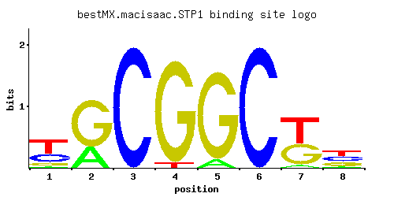

STP1
YDR463W, SSY2, BAP1
Transcription factor, undergoes proteolytic processing by SPS (Ssy1p-Ptr3p-Ssy5p)-sensor component Ssy5p in response to extracellular amino acids; activates transcription of amino acid permease genes and may have a role in tRNA processing
Best-performing DNA-binding model.

View and copy the recommended matrices ↘
A | 0.043 0.303 0.001 0.001 0.087 0.001 0.043 0.043 C | 0.304 0.001 0.997 0.001 0.001 0.997 0.001 0.348 G | 0.130 0.695 0.001 0.955 0.911 0.001 0.435 0.261 T | 0.523 0.001 0.001 0.043 0.001 0.001 0.521 0.348
A | 4 30 0 0 8 0 4 4 C | 30 0 99 0 0 99 0 34 G | 13 69 0 95 91 0 43 26 T | 52 0 0 4 0 0 52 34
A | -2.01 -0.05 -5.77 -5.77 -1.30 -5.77 -2.01 -2.01 C | 0.52 -5.19 1.71 -5.19 -5.19 1.71 -5.19 0.66 G | -0.33 1.35 -5.19 1.67 1.62 -5.19 0.88 0.37 T | 0.49 -5.77 -5.77 -2.01 -5.77 -5.77 0.49 0.08
Alternative candidate matrices 3
Historical matrix candidates from the original ScerTF database. Expand a source to inspect its original logo, scores, and matrix values.
STP1_AFoat et. al.P = 2.65e-08View matrix ↘
STP1_BFoat et. al.P = 1View matrix ↘
STP1Harbison et. al.P = 0.01086View matrix ↘
Gene-level annotations and interactions.
Genes bound in ChIP-chip experiments 52 genes
YAR002W, YBR025C, YBR099C, YCL024W, YCL025C, YCL065W, YCL066W, YCL067C, YDL041W, YDL043C, YDL146W, YDL152W, YDR046C, YDR047W, YDR048C, YDR098C-A, YDR098C-B, YDR179C, YDR179W-A, YDR210W-D, YDR494W, YDR508C, YDR510W, YDR512C, YEL003W, YER007C-A, YGR040W, YGR055W, YGR225W, YGR256W, YHR011W, YHR181W, YJL007C, YJR011C, YKL139W, YKL169C, YLR094C, YLR105C, YLR345W, YMR193W, YMR258C, YNL260C, YNR050C, YOL023W, YOL125W, YOL126C, YOR058C, YOR273C, YOR274W, YPL251W, YPL253C, YPL265W
Genes affected by TF deletion 272 genes
YGR278W, YIL116W, YLR248W, YML114C, YML116W, YNL052W, YDL128W, YDR222W, YEL046C, YGL039W, YGL009C, YKL043W, YLR092W, YLR094C, YMR226C, YNL241C, YNL277W, YOR065W, YPL017C, YOR381W, YPL019C, YPL021W, YBR005W, YGL166W, YHL047C, YKR013W, YMR042W, YNR056C, YOL016C, YOR220W, YOR194C, YOR226C, YGL038C, YGR151C, YGR157W, YHR112C, YLR089C, YNL276C, YOR066W, YPL018W, YOR382W, YBR068C, YFL015C, YGR033C, YHR053C, YHR055C, YOR317W, YDR282C, YER028C, YHR208W, YKL141W, YML056C, YML027W, YMR316W, YNR028W, YBR093C, YBR129C, YDR463W, YLL061W, YLL002W, YMR070W, YMR072W, YMR102C, YMR136W, YNL146W, YOR316C, YPL265W, YDR309C, YDR281C, YER052C, YIL051C, YJL212C, YKL142W, YKL206C, YLR119W, YLR183C, YML055W, YNL300W, YNL336W, YOR160W, YOR132W, YBR010W, YBR012C, YDR072C, YIL118W, YIL124W, YLR257W, YNL089C, YNL058C, YNL030W, YNL088W, YDL072C, YDR224C, YGR134W, YHR127W, YLR038C, YNL217W, YOR009W, YOR385W, YBR009C, YCL064C, YDR077W, YDR411C, YIL119C, YIL121W, YJR094C, YMR017W, YMR023C, YNL057W, YNL090W, YNR066C, YLR099C, YML007W, YDR502C, YLR350W, YMR113W, YOL118C, YPR028W, YBL003C, YBR265W, YCL030C, YDL196W, YDR284C, YHR215W, YKL147C, YKL149C, YLR128W, YLR194C, YMR262W, YMR293C, YMR320W, YMR264W, YMR294W-A, YNR035C, YPL088W, YPL092W, YPL124W, YPL156C, YBR069C, YBR099C, YBR071W, YBR101C, YBR135W, YBR105C, YDL012C, YDR105C, YDR534C, YGR012W, YHR032W, YJR119C, YJR150C, YLL037W, YMR110C, YMR144W, YOL111C, YOR298C-A, YPL273W, YLL023C, YAR071W, YBL002W, YBR264C, YER035W, YER064C, YGL080W, YGR219W, YKL150W, YML094W, YMR294W, YMR321C, YMR295C, YNL312W, YGL062W, YHL035C, YER157W, YKR024C, YMR055C, YOL064C, YDR345C, YBR207W, YDR264C, YJL101C, YJL071W, YLR416C, YMR210W, YNL289W, YDR047W, YER156C, YGR295C, YLR231C, YLR294C, YMR031C, YNL031C, YOL032W, YML097C, YAR027W, YDR209C, YGR137W, YKL120W, YDR112W, YDR146C, YDR516C, YHR071W, YIR017C, YKL001C, YLL015W, YOL158C, YOR302W, YOR367W, YOR383C, YGR234W, YLR136C, YMR298W, YMR272C, YMR304C-A, YDR174W, YKL002W, YOL119C, YBR302C, YDL241W, YDR297W, YIL033C, YJL196C, YLR199C, YNR042W, YNR044W, YNL322C, YPL127C, YPL129W, YPL163C, YER091C, YBR056W, YHR018C, YHL040C, YKR069W, YOR247W, YPL264C, YAL062W, YDL120W, YDR270W, YEL065W, YHR200W, YMR184W, YPR159W, YGL255W, YMR062C, YOR248W, YJR137C, YBR244W, YKL096W-A, YLR049C, YMR215W, YMR250W, YNL264C, YDL023C, YFR030W, YGR055W, YKL035W, YLR364W, YOR375C, YIL011W, YIL074C, YJR010W, YMR305C, YNR018W, YDL022W, YFL036W, YKL036C, YOR306C, YGR235C, YLR205C, YML107C, YML109W
Genes supported by both experiments 5 genes
YBR099C, YDR047W, YGR055W, YLR094C, YPL265W
Predicted TF–TF partners 19 genes
CAT8, CRZ1, GIS1, GSM1, MIG1, MIG3, MSN4, NHP10, OAF1, PDR8, RGM1, RSC3, RSC30, RSF2, SUM1, SUT1, THI2, USV1, YER184C